Table of Contents | Last | Next
Main Portions of Paper Airplane
Edit Mode
The Paper Airplane editor has five-different default configurations that appear initially depending on what the base document is. However, any tool can be used at any time independent of the starting type of base document.
- Word processing
- Graphics
- Spreadsheet
- Image Processing
- Presentation
The full Word Processing toolset looks as follows:
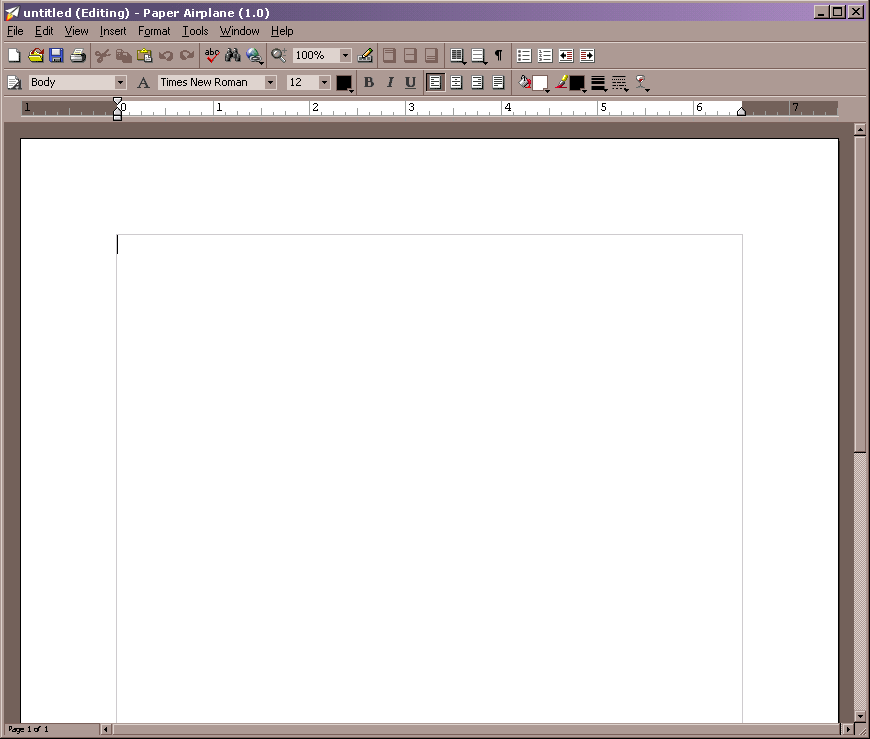
Edit Mode - Word Processing Toolset
The full Graphics toolset looks as follows:
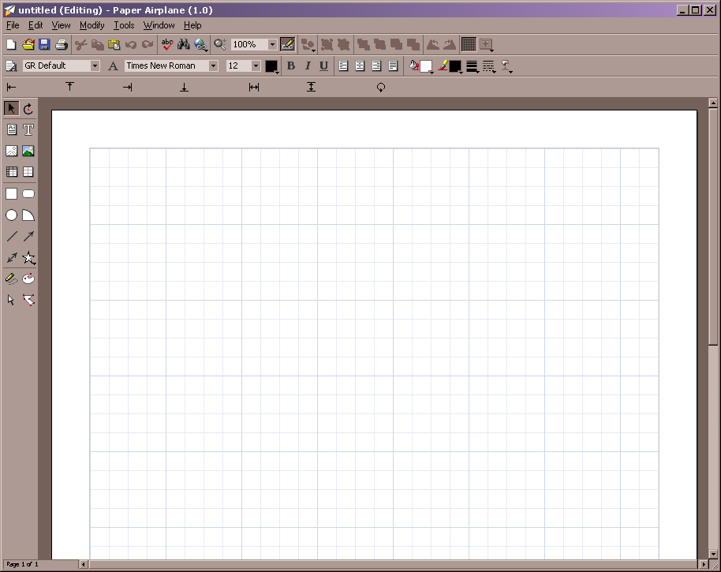
Edit Mode - Graphics Toolset
The full Spreadsheet toolset looks as follows:
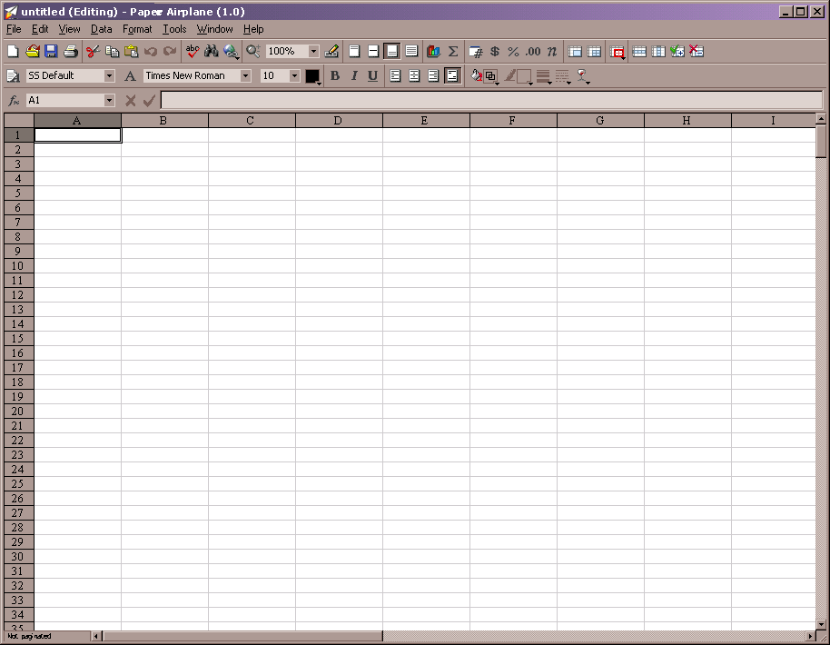
Edit Mode - Spreadsheet Toolset
The full Image Processing toolset looks as follows:
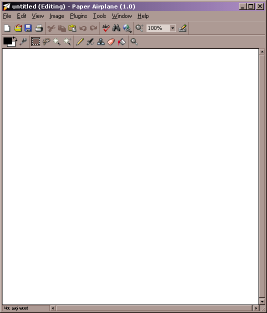
Edit Mode - Image Processing Toolset
The full Presentation toolset looks as follows:
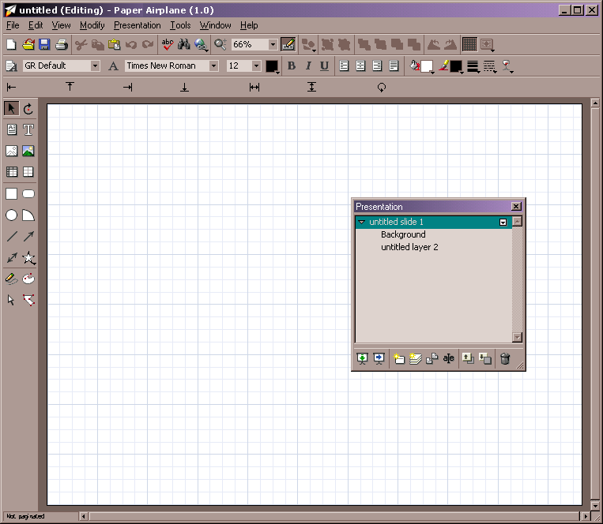
Edit Mode - Presentation Toolset
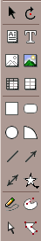
Edit Mode - Drawing Toolbar
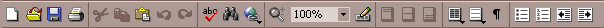
Edit Mode - Standard Toolbar
Edit Mode - Format Toolbar
Edit Mode - Parts Toolbar for Graphics Part and Presentation Part

Edit Mode - Parts Toolbar for Image Processing Part
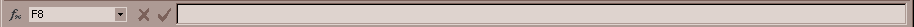
Edit Mode - Parts Toolbar for Spreadsheet Part
Edit Mode - Parts Toolbar for Word Processing Part
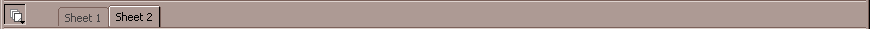
Edit Mode - Sheet Toolbar
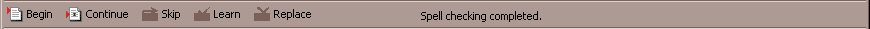
Edit Mode - Spelling Toolbar
No matter what toolset is being used, the following toolbars are always available and can be called upon to change the page:
- Drawing - Provides tools for drawing vector graphics on the current page.
- Standard - Provides standard tools depending on what kind of part is selected.
- Format - Provides text and object formatting tools.
- Parts - Different depending on what kind of part is selected. If a graphics or presentation part is selected, then the coordinates of the object are displayed and can be changed by double-clicking their values. If an image processing part is selected, then tools for manipulating the bitmap image are presented. If a spreadsheet part is selected, then an equation field is displayed. If a word processing part is selected, then a ruler is shown.
- Sheet - Displays tabs for each sheet that may be present in a page. Sheets can hold arbitrary content and not just spreadsheets. A page can be imagined as a bundle of sheets stapled together, with each sheet able to hold any kind of content.
- Spelling - Displays tools for controlling and checking spelling.
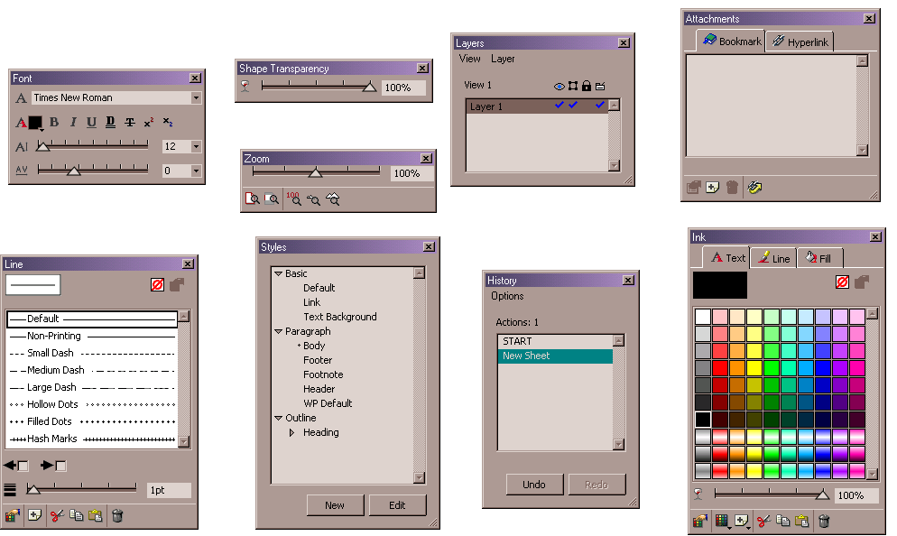
Edit Mode - All Panels Shown
The following floating panels are always available:
- Font - Control the font attributes of the selected object.
- Zoom - Interactively control zooming into and out of the page.
- Line - Control the line attributes of the selected object.
- Styles - Manipulate and view the styles defined for the page.
- History - View and undo the actions performed so far.
- Ink - Control the colors used for the current object.
- Shape Transparency - Control how transparent the selected object is.
- Layers - View and manipulate the layers in your document.
- Attachments - Attach bookmarks and hyperlinks to your document.
Table of Contents | Last | Next